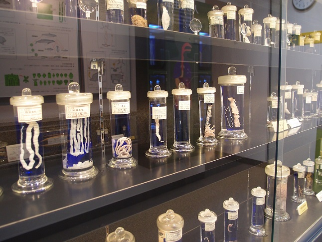
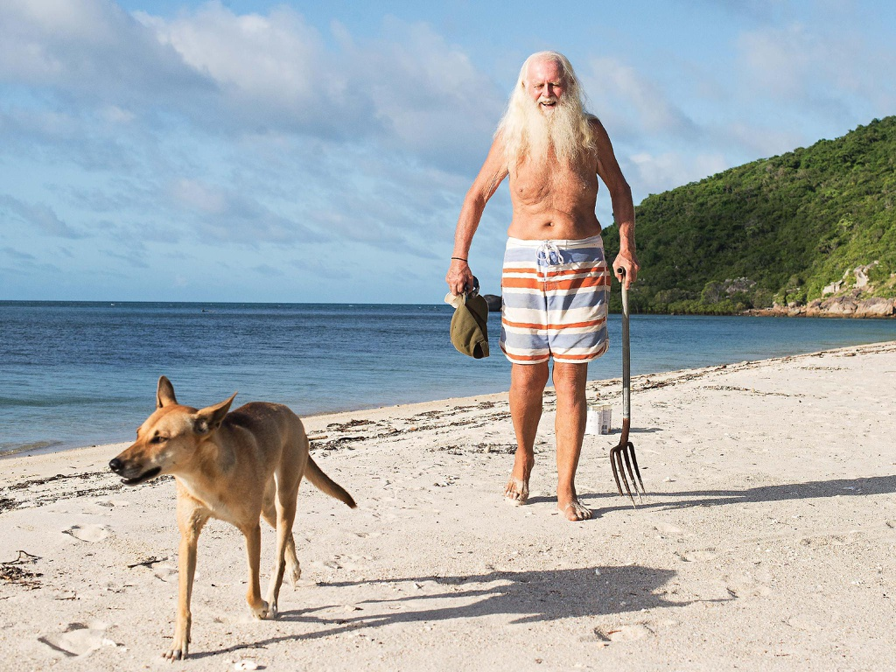
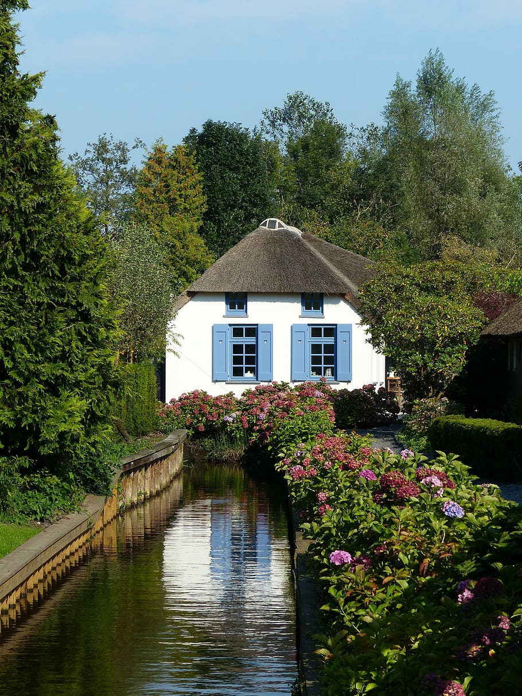
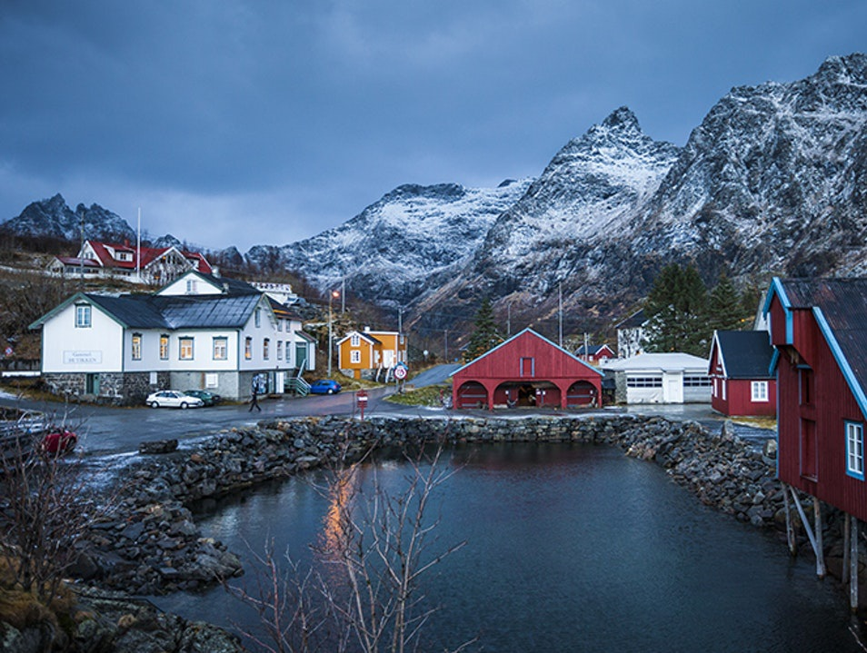
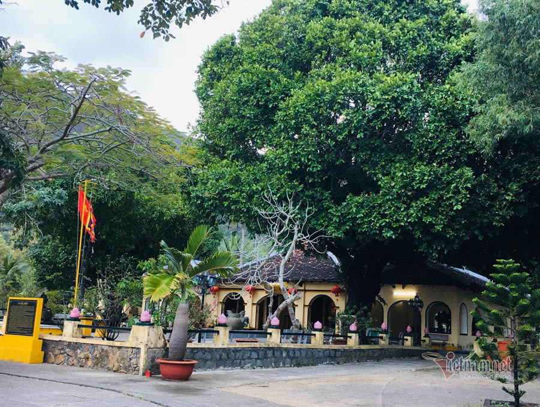

Những bức ảnh tuyệt đẹp đến từ vũ trụ
Vũ trụ chưa bao giờ hết bí ẩn đối với con người, đặc biệt là khi chúng ta nhìn lên những vì sao và tự hỏi điều gì ẩn chứa đằng sau những lấp lánh tuyệt đẹp đấy?

Những bảo tàng kỳ lạ nhất thế giới
Đây là những bảo tàng kỳ lạ nhưng không kém phần thú vị, chúng sẽ khiến mọi du khách đến đây đều có những ký ức đáng nhớ.

Triệu phú ra đảo hoang ở ẩn hơn 20 năm
Sau những biến cố tài chính, triệu phú một thời tìm thấy chân lý của đời mình ở hòn đảo bỏ hoang phía bắc bang Queensland (Australia).

Ngôi làng hơn 700 năm không khói bụi
Làng Giethoorn được biết đến là địa danh đẹp như cổ tích suốt 700 năm không có đường đi, người dân nơi đây kết nối với nhau bằng thuyền qua những kênh đào.

Ngôi làng có tên ngắn nhất hành tinh
Nơi này đã được công nhận là địa danh sở hữu tên gọi ngắn nhất thế giới. Đa số người dân tại đây kiếm sống nhờ việc khai thác du lịch.

Huyền thoại 3 cây thị 200 năm tuổi ở Côn Đảo
Người dân mang 3 cây thị từ rừng về trồng ở miếu để tưởng nhớ bà Phi Yến (vợ chúa Nguyễn Ánh) từ 200 năm trước. Ngày nay, 3 cây thị được công nhận là cây di sản VN.